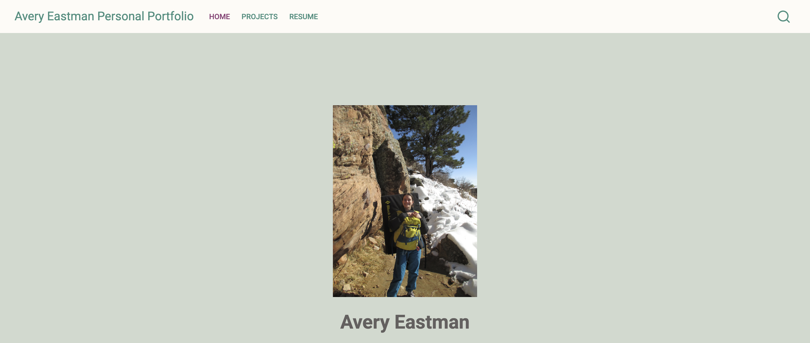
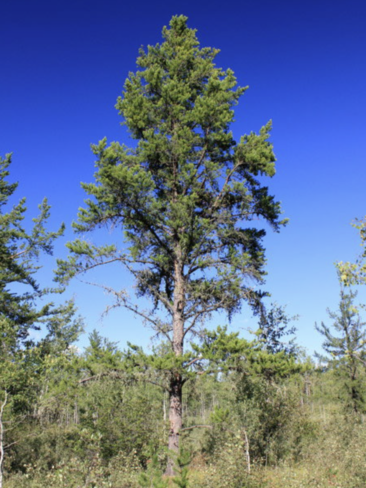
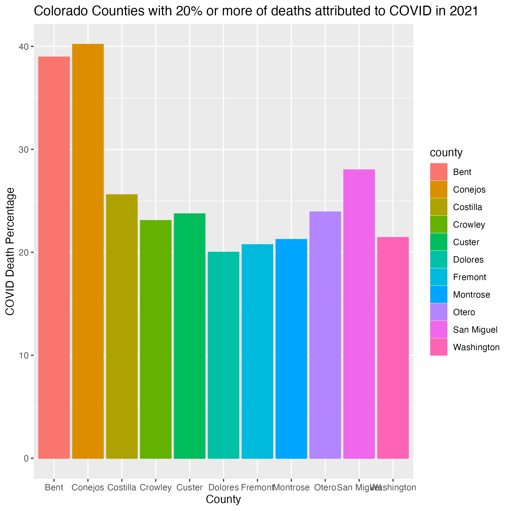
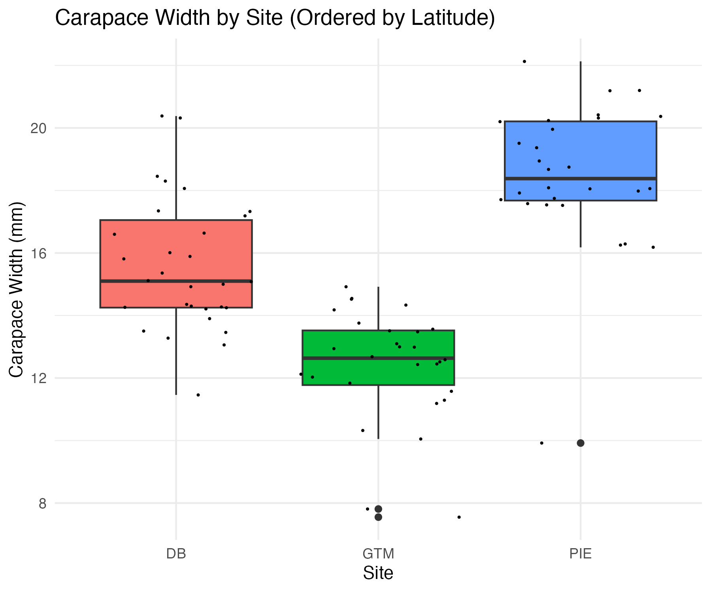
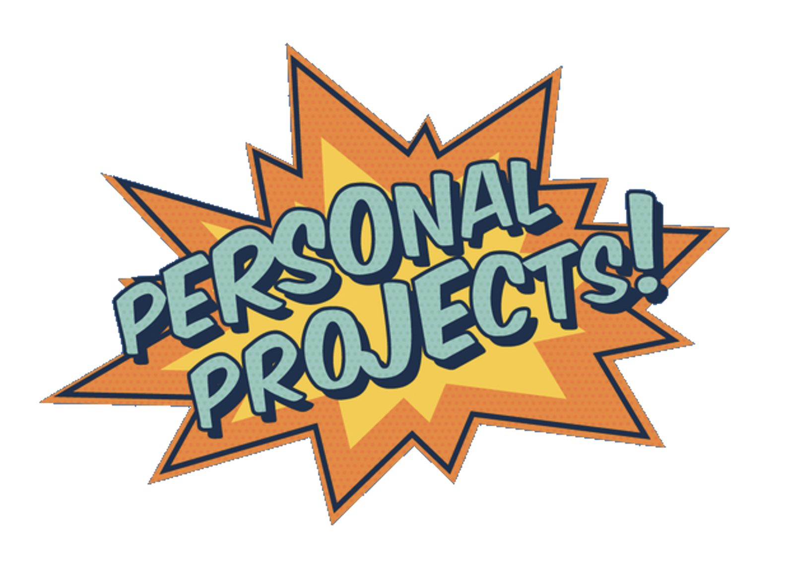
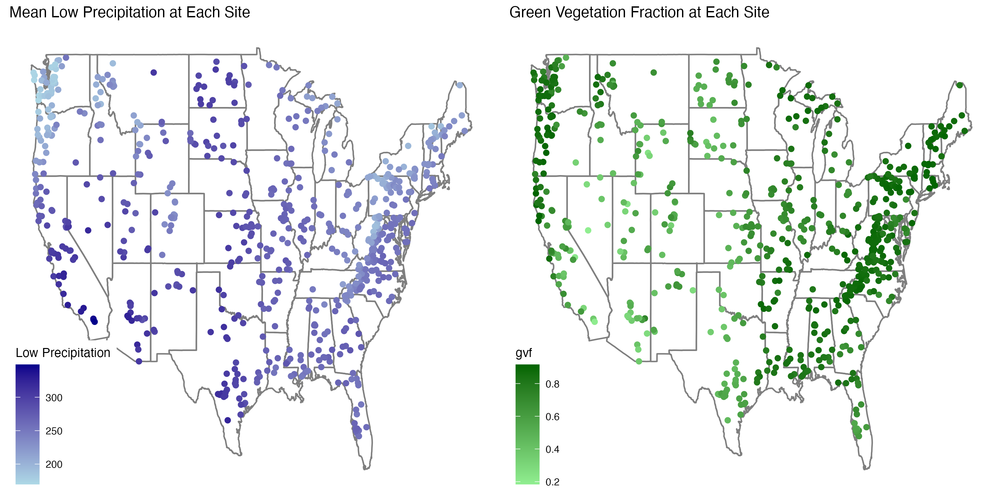
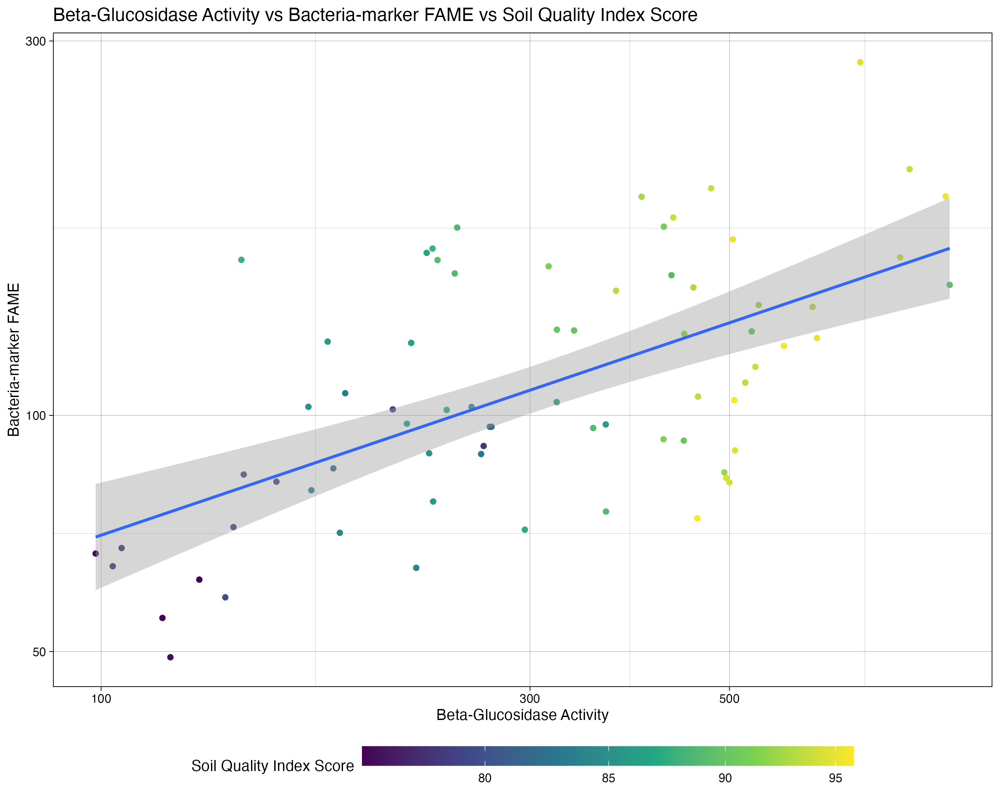
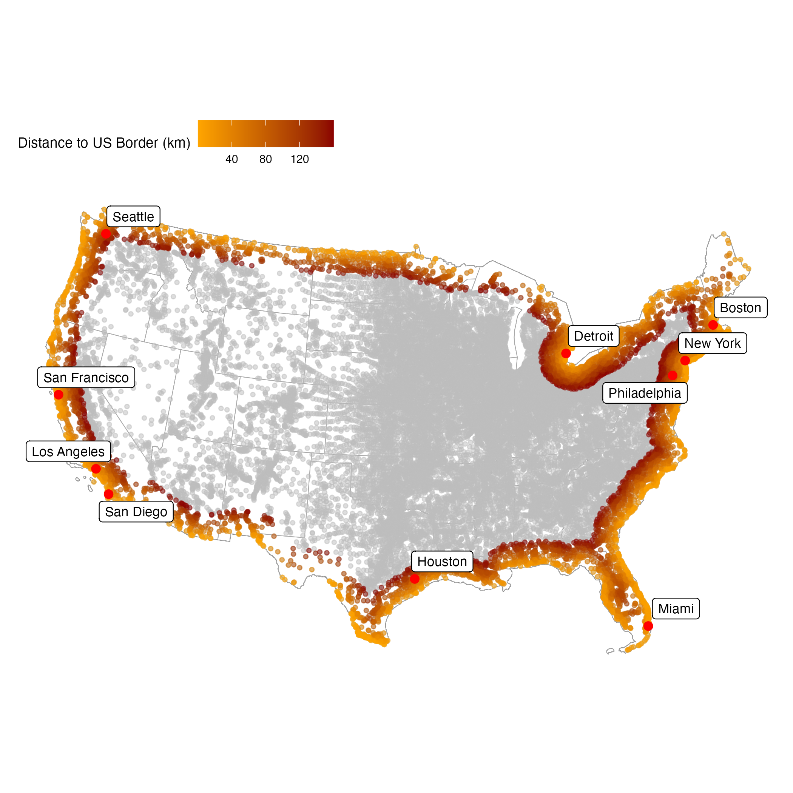
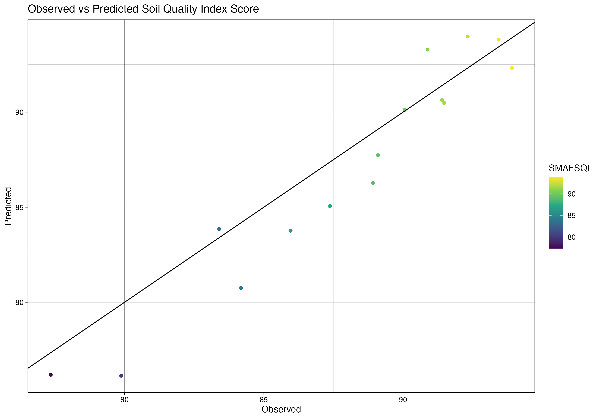

Projects
In spring of 2025 I took a Quantitative Reasoning class based in R. Here are my projects from the class:
Project 1: Personal Portfolio

My first project for this class was called Personal Portfolio. I was tasked with making a web page using R, RStudio, and Quarto.
In this project I:
Learned how to create a basic website
Render and push code to a github repo
Got familiar with RMarkdown
Here is the link to my website’s homepage! Click here to view homepage
Project 2: Minnesota tree growth

This project was all about manipulating and summarizing data with dplyr using a long term tree growth observation record from Minnesota.
Here is the link to the project. Click here
Project 3: Data Wrangling and Visualization — COVID-19

In this project I gained experience using COVID-19 data to practice data wrangling and visualization skills. In addition, I became more familiar with using flextable.
Here is the link to the project. Click here
Project 4: Statistics in R

This project helped me gain familiarity with calculating statistics in R. In this project I used several statistical tests such as chi-square, t-tests, and correlation tests. The data used for this project is from the Long-Term Ecological Research (LTER) Network, which is a collaborative effort involving more than 2000 scientists and students investigating ecological processes over long temporal and broad spatial scales.
Here is the link to the project. Click here
Project 5: Project Proposal

This project helped me draft potential research topic for my final research project for the class. I also gained experience with quarto manuscripts in this project.
Here is the link to the project. Click here
Project 6: Machine Learning in Hydrology

For this project I used Tidymodels & CAMELS datasets to gain experience with modeling and building a workflow.
Here is the link to the project. Click here
Project 7: Personal Project Kickoff
This project served as a draft of the introduction, data, and methods sections for the scientific paper of my final research project for the class.
Here is the link to the project. Click here
Project 8: Machine Learning — The Whole Game Plan

In this project I applied my knowledge of the Machine Learning process to create a complete machine learning pipeline for a regression problem. To to this I build off of my work in project 6.
Here is the link to the project. Click here
Project 9: Personal Project Updates

This project included the draft of the results and discussion for the scientific paper of my final research project. Additionally, I expand on the methods section of the paper.
Here is the link to the project. Click here
Project 10: Distances and Projections

In this project I was able to build on my data wrangling and data visualization skills. The main goals for this project were to explore the properties of sf, sfc, and sfg features & objects; how they are stored; and issues related to distance calculation and coordinate transformation.
Here is the link to the project. Click here
Project 11: Formal Report

This is my final formal report. It is written like a scientific paper with a clear title and the following sections: abstract, introduction/hypothesis, methods, results, discussion/conclusion. The results section also includes my full code.
Here is the link to the report. Click here